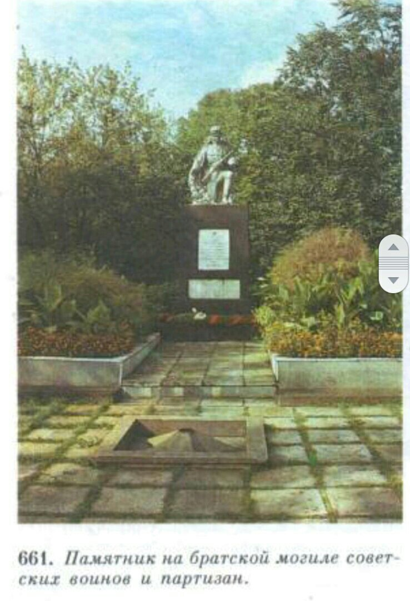

Братская могила
Братская могила советских воинов и партизан на пл. Октября, в сквере.
Похоронены 30 воинов и партизан, погибших в 1944 г.
на территории Ивановского района в боях с немецко-фашистскими захватчиками.
Среди погибших- командир партизанского отряда им. М. И. Кутузова А. Н. Гоманишин и партизанский разведчик И. Липский.
